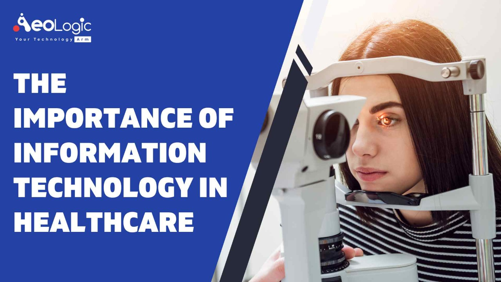

Fundamentals of IT
written by Mohamed Saeed
e-mail: mohamedsaead717@gmail.com
location: Gharbia

The Importance of Information Technology in Healthcare
Transportation, research and development, education, manufacturing;
the role of IT in healthcare is impacting virtually in the 21st century.
Although there's one industry where information technology may have the most
considerable influence: the healthcare industry. Information technology refers
to using various systems. For example, telecommunications and computers, store,
retrieve, and send information. More specifically, the importance of IT in
healthcare involves the exchange of health-related information via electronic
systems. Such as better medical care, decreased medical errors, lower health care